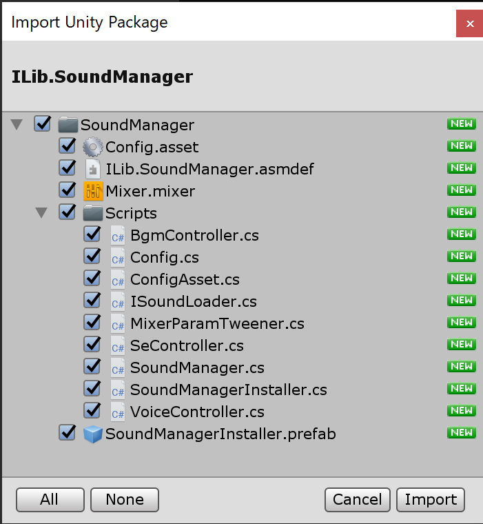
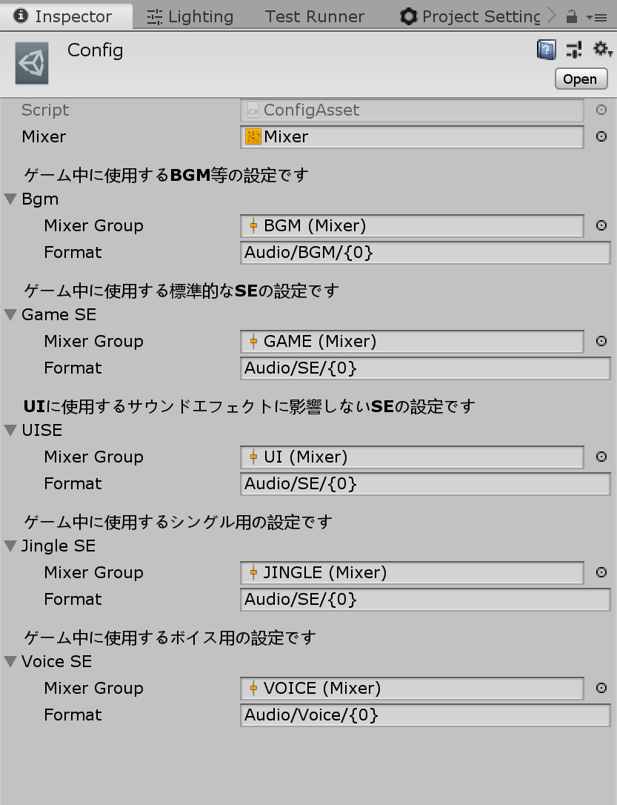
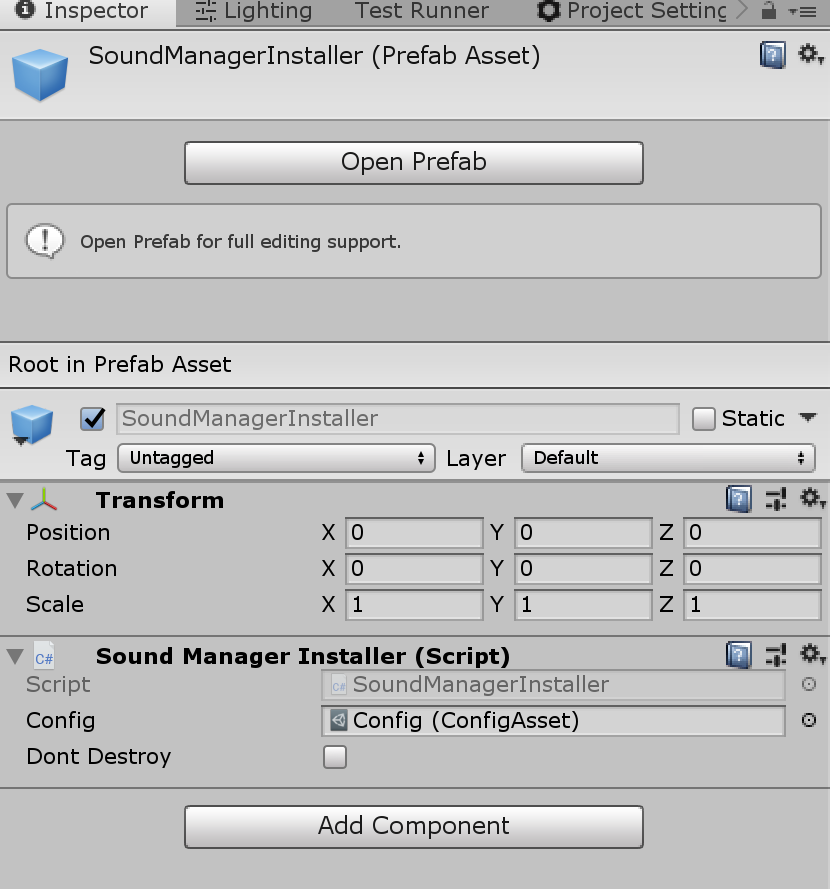
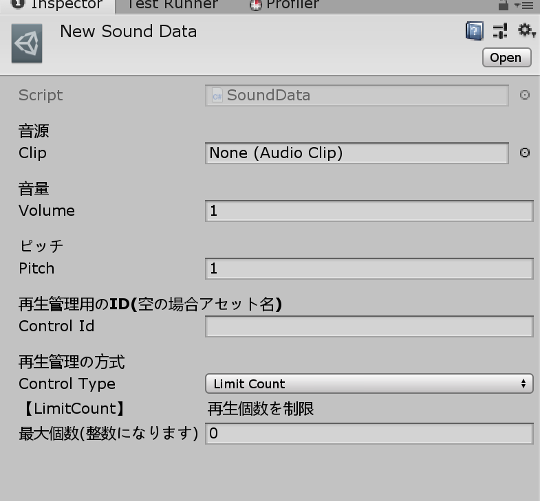

ILib.SoundManager
ILib Unity SoundManager Package
概要
ilib-sound-controlを利用したサウンドマネージャーのリファレンス実装です。
読み込み方法のみ拡張できるようになっているため、アセットバンドルを利用して再生する事も可能です。
導入方法
upm経由でilib-sound-controlのパッケージを導入してください。
導入するとメニューに[Tools/SoundControl/Import SoundManager]が表示されるのでインポートを実行します。

設定を行う
インポートした Assets/SoundManager/Config.asset を選択します。
基本的にそのままで使用できる状態になっています。Format はロードに使用するパスになります。Audio/BGM/{0} だと {0} の部分に再生時に指定したファイル名が入ります。
デフォルトでは Resources フォルダから相対パスになります。

初期化
Assets/SoundManager/SoundManagerInstaller.prefab をシーンに配置するだけで起動が可能です。SoundManagerInstaller は自身が破棄されると SoundManager も自動で破棄します。
また、Dont Destroy にチェックを入れるとシーン遷移で破棄されなくなります。

補足
ILib.Audio.SoundManager.Initialize 関数を利用して手動で初期化する事も出来ます。
サウンドデータ作成する
ロードするアセットについて
オーディオの読み取り方法は、UnityのAudioClipと専用のデータアセットのSoundData・MusicDataの三種類あります。
SEはAudioCliporSoundData、BGMはAudioCliporMusicDataの二種類になります。
指定のロードパスにあるアセットの型で自動的に判断するためコード側で特にどちらを利用しているかを指定をする必要はありません。
AudioClipとSoundDataの違い
SoundData を利用するとPitchやVolumeをデータとして設定出来るほか、簡単な発音制御を指定できます。
逆にこのような複雑な制御を必要としないのであれば AudioClip をそのまま利用するのが一番です。AudioDataを利用しなくてもPitchやVolumeなどは実行時に変更できます。MusicDataに関しても概ね同じです。
SoundData・MusicDataを作成する
[Assets/Create/ILib/Audio/SoundData]・[Assets/Create/ILib/Audio/MusicData]で作成できます。
ConfigのFormat指定したパスに作成・配置してください。
この作業は AudioClip をそのまま使う場合は必要ありません。
以下が、SoundDataのパラメーターです。

音源(Clip)
再生したいAudioClipを設定してください。
音量(Volume)
音量です。コード上でも音量を指定した場合、この値と乗算されます。
ピッチ(Pitch)
ピッチです。コード上でも音量を指定した場合、この値と乗算されます。
再生管理用のID(Control Id)
後述の再生管理に利用するIDです。
空の場合は自動でアセット名が設定されますが、同じ管理をしたいサウンドデータがある場合は明示的に指定してください。
再生管理方法
同じControl Idのサウンドデータに対して発音制御が行えます。
現在、再生個数を制限・再生間隔を制限・先勝ち・後勝ち が設定できます。
MusicData は音源・音量・ピッチのみ指定できSoundDataと同じ内容ため説明を省略します。
使用方法
全ての操作はILib.Audio.SoundManagerクラスを通して利用します。
BGMのロードについて
BGMの音源は再生関数の実行時にロードされます。Resourcesから読む場合は十分問題ない速度で読めると想定されるため、事前にキャッシュする機能は今現在ありません。
拡張して独自のロードを行う場合は、必要に応じて独自ロード側でプリロードを行ってください。
BGMを再生する
BGMの再生操作はChange・Push・Popの三つがあります。PushとPopから分かるようにBGMは全てスタック管理されています。
SoundManager.Bgm.Change("BGM_FILE_NAME")
再生されているBGMを停止し、新しいBGMを再生します。clearStackフラグを有効にすると、詰まれているスタックも全て消してから再生します。
スタック管理をしない場合、全てChange関数で行ってください。
SoundManager.Bgm.Push("BGM_FILE_NAME")
再生されているBGMを停止しスタックに積んでから、新しいBGMを再生します。
SoundManager.Bgm.Pop()
再生されているBGMの再生を停止し、スタックに詰まれているBGMの再生を開始します。startLastPositionフラグで前回再生を停止した再生位置から再開できます。
例:メニューのみBGMを変えて、閉じた際に元に戻す場合は以下のようなコードで出来ます。
void Prop
{
// メニューを開く前のBGM
SoundManager.BGM.Change("NORMAL_BGM");
// メニューを開く
Menu.Open();
// NORMAL_BGMかMENU_BGMに切り替わる
SoundManager.BGM.Push("MENU_BGM");
// メニューが閉じられた
Menu.Close();
// NORMAL_BGMが再生される
SoundManager.BGM.Pop();
}
MusicPlayConfig
再生時に MusicPlayConfig を渡すことでより細かい再生指示を行えます。
SEを再生する
SEのロードについて
SEに関しては事前にロードしてキャッシュを作ることが出来ます。
キャッシュがない場合はロードしてから再生されます。
この遅延ロード再生の機能は便利ですが、SoundManager側では遅延ロード時は一切キャッシュをしない実装になっているため毎回ロード処理が走ります。
基本的に利用するSEは事前にSoundManager.Se.AddCache関数等でキャッシュを作成してください。
補足
SoundPlayer側の実装で遅延ロード時にキャッシュする機能自体はあります。
そのため、SoundMangerのコードを一部変更すれば遅延ロード時にキャッシュを持つ挙動に変えることが可能です。
デフォルトで有効になっていない理由は、初心者が解放を明示的に行わず気づかぬままにメモリが肥大化するのを避けるためです。
SEを再生する
SEの種類
SEの種類としてGame・UI・Jingleの三つを用意してあります。
それぞれ以下の用途で使います。
Game
ゲーム用の通常のSEです。Jingleの再生時にダッキングの影響を受けます。
UI
UI用のSEです。ダッキング等の影響を受けません。
Jingle
特別なSEです。レベルアップの効果音などに使います。
再生時にダッキングによってGameとBGMに影響を与えます。
再生関数について
SoundManager.Se.Play
Game用のSEを再生します。
SoundManager.Se.PlayHandle
Game用のSEを再生します。
返り値のIPlayingSoundContextから音量・ピッチの変更やフェードイン・アウトなどの操作が出来ます。
SoundManager.Se.PlaySeFromUI
UI用のSEを再生します。
SoundManager.Se.PlayJingle
Jingle用のSEを再生します。
返り値のIPlayingSoundContextから音量・ピッチの変更やフェードイン・アウトなどの操作が出来ます。
拡張方法
ロードの方法を変更する
SoundManagerInstallerのゲームオブジェクトにILib.Audio.SoundManagement.ISoundLoaderが実装されたComponentがあった場合、SoundManagerはISoundLoader経由でロードを行います。
以下のようなスクリプトをSoundManagerInstaller.prefabにAddComponentしておくとロード方法を変更できます。
using System;
using UnityEngine;
using ILib.Audio;
using ILib.Audio.SoundManagement;
namespace App.Audio
{
public class SoundLoader : MonoBehaviour, ISoundLoader
{
public bool LoadMusic(string path, Action<MusicInfo, Exception> onLoad)
{
//独自のローダー
return ResourceLoader.Load(path,(MusicData data, Exception ex) =>
{
onComplete?.Invoke(data?.CreateMusic() ?? null, ex);
});
}
public bool LoadSound(string path, Action<SoundInfo, Exception> onLoad)
{
//独自のローダー
return ResourceLoader.Load(path,(SoundData data, Exception ex) =>
{
onComplete?.Invoke(data?.CreateMusic() ?? null, ex);
});
}
public bool LoadVoice(string path, Action<SoundInfo, Exception> onLoad)
{
//独自のローダー
return ResourceLoader.Load(path,(AudioClip clip, Exception ex) =>
{
if (ex != null)
{
onComplete?.Invoke(null, ex);
return;
}
SoundInfo info = new SoundInfo();
info.Clip = clip;
info.ControlId = path;
onComplete?.Invoke(info, null);
});
}
}
}